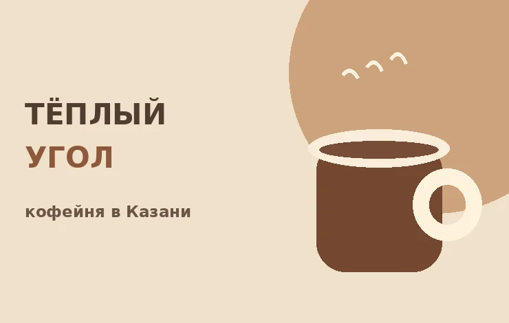
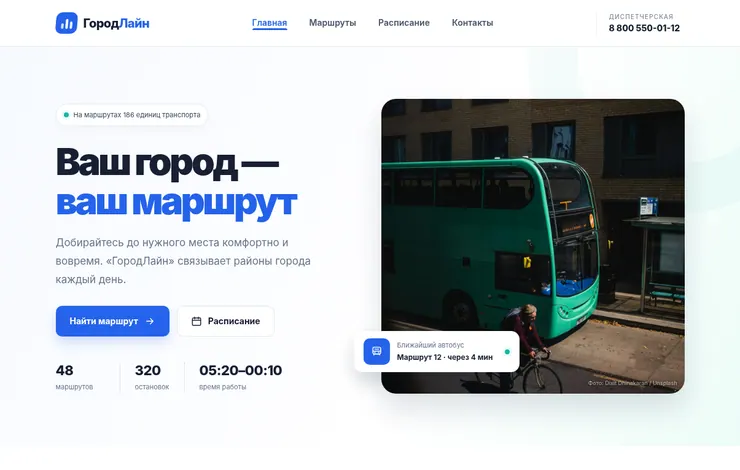
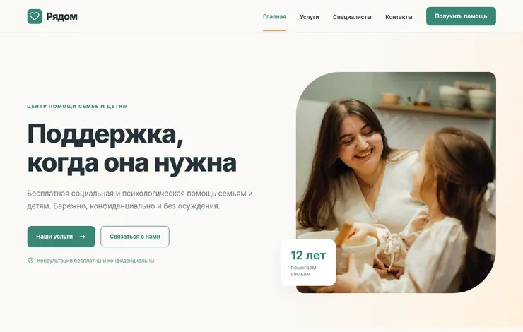
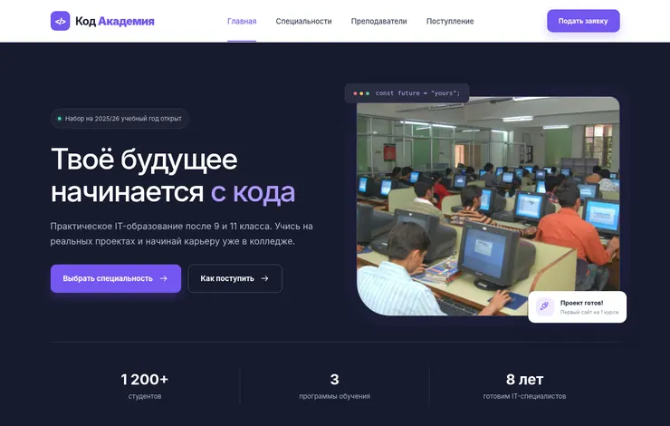
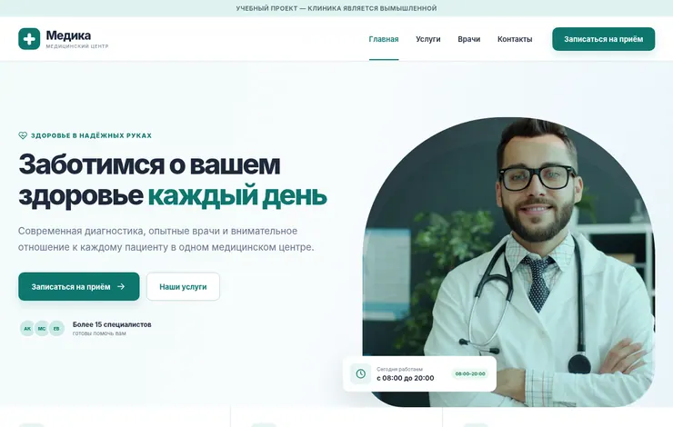
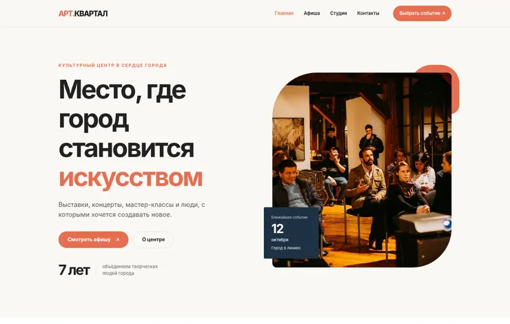
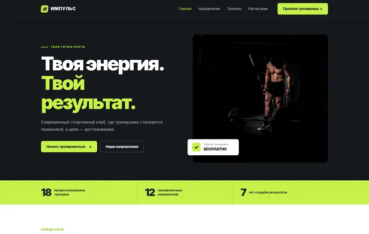
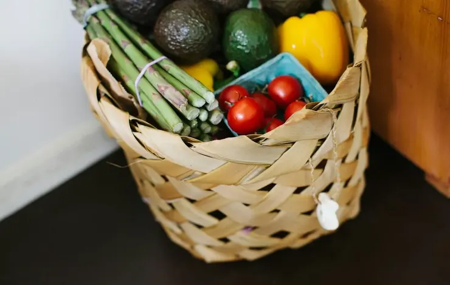
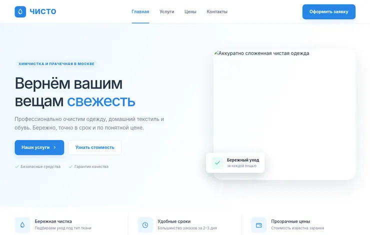

ПЕТРОВ КИРИЛЛ / WEB DEVELOPMENT
10 сайтов.
10 разных задач.
Один проект.
Десять полноценных учебных веб-сайтов в единой коллекции. Каждый проект открывается по ссылке и содержит собственные HTML, CSS, JavaScript и локальные материалы.
10 тематикHTML CSS / JS100% локальные ссылки
РАБОТЫ / 01–10
10 проектов
Каталог проектов.
Каждая карточка содержит две ссылки: на работающий сайт и на его оригинальный дизайн-макет в Figma.

ПРОЕКТ / 02
ПРОЕКТ / 03
ПРОЕКТ / 04
ПРОЕКТ / 05
ПРОЕКТ / 06
ПРОЕКТ / 07
ПРОЕКТ / 08
ПРОЕКТ / 09
ПРОЕКТ / 10
Ничего не найдено. Попробуйте другой запрос.
ОБ ЭТОЙ КОЛЛЕКЦИИ
От макета
От макета
до работающего сайта.
Проекты подготовлены для аттестации по дисциплине «Проектирование, разработка и оптимизация веб-приложений». Каждый сайт живёт в отдельной папке, поэтому можно открыть его страницы и изучить исходный код.
01Адаптивная верстка
Desktop и Mobile
Desktop и Mobile
02Чистые технологии
HTML5, CSS3, JavaScript
HTML5, CSS3, JavaScript
03Интерактивность
Формы, фильтры, калькуляторы
Формы, фильтры, калькуляторы
04Сайты и макеты
Отдельные ссылки на HTML и Figma
Отдельные ссылки на HTML и Figma